Το Χωριό μας
Η Κοκκινομηλιά είναι ένας από τους πιο αυθεντικούς, ορεινούς θησαυρούς της Βόρειας Εύβοιας. Χτισμένη σε υψόμετρο περίπου 560 μέτρων στις πλαγιές του όρους Ξηρόν, αποτελεί ένα πραγματικό «μπαλκόνι» που συνδυάζει την άγρια ορεινή ομορφιά με την άμεση και ταχύτατη πρόσβαση σε μερικές από τις ωραιότερες ακτές του νησιού. Είναι ένας τόπος που δοκιμάστηκε σκληρά από τις αντιξοότητες, αλλά σήμερα στέκεται όρθιος, αποτελώντας ένα ολοζώντανο παράδειγμα φυσικής, πολιτιστικής και κοινωνικής ανθεκτικότητας.
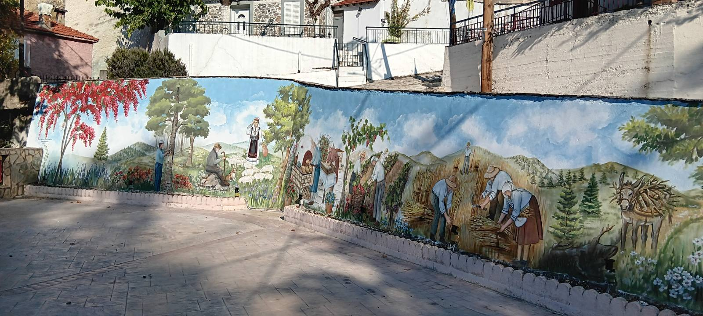
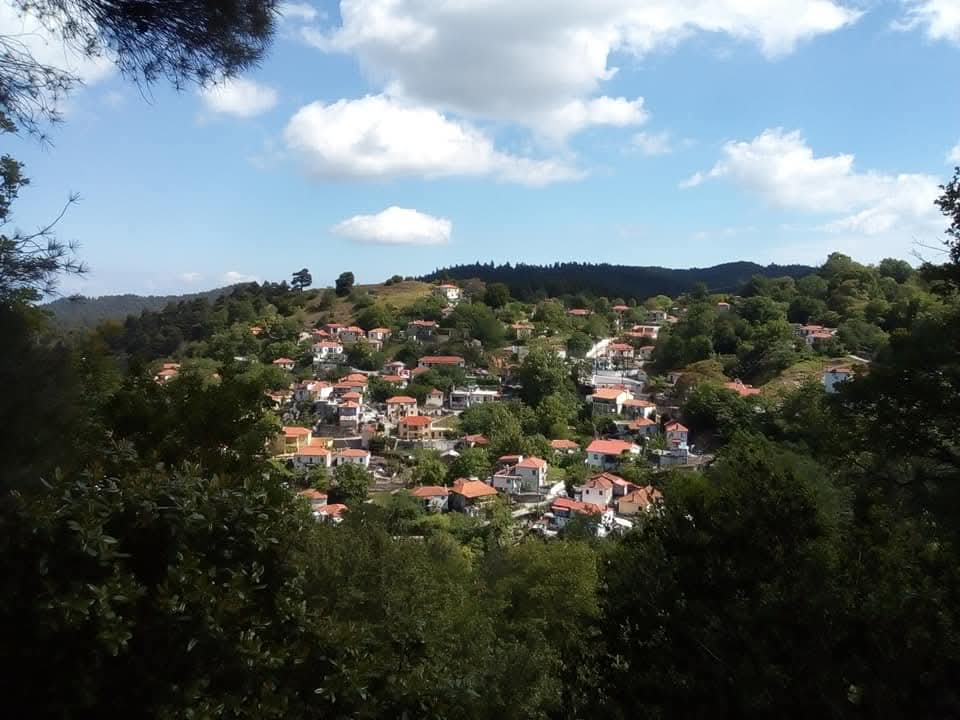
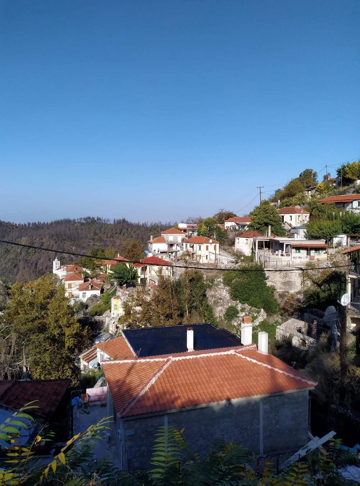
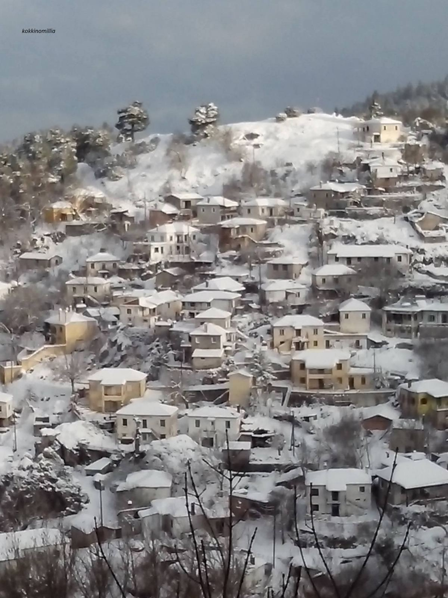
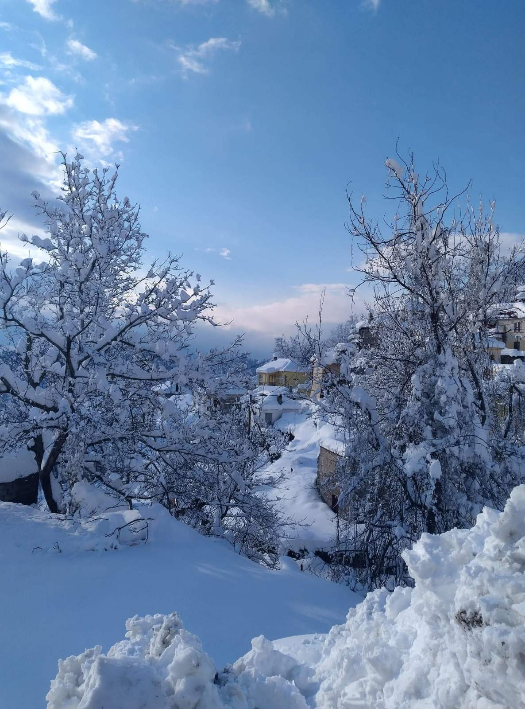
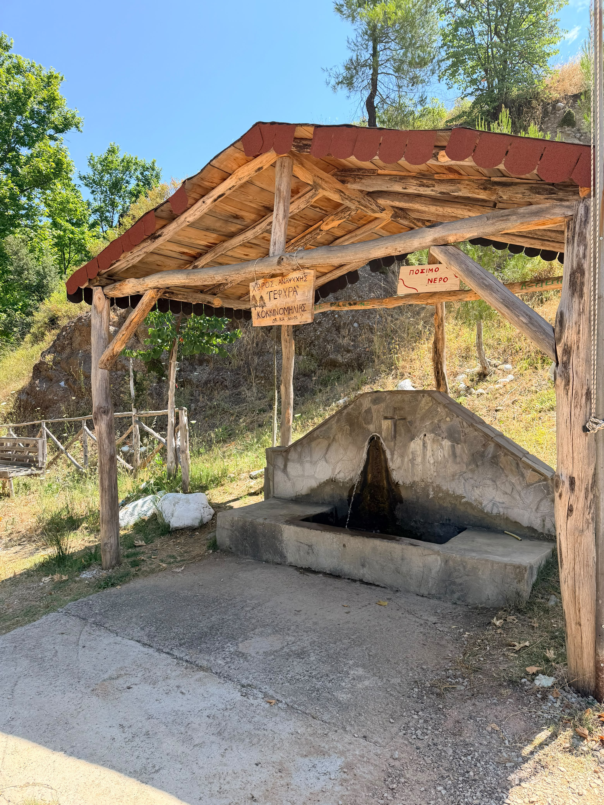
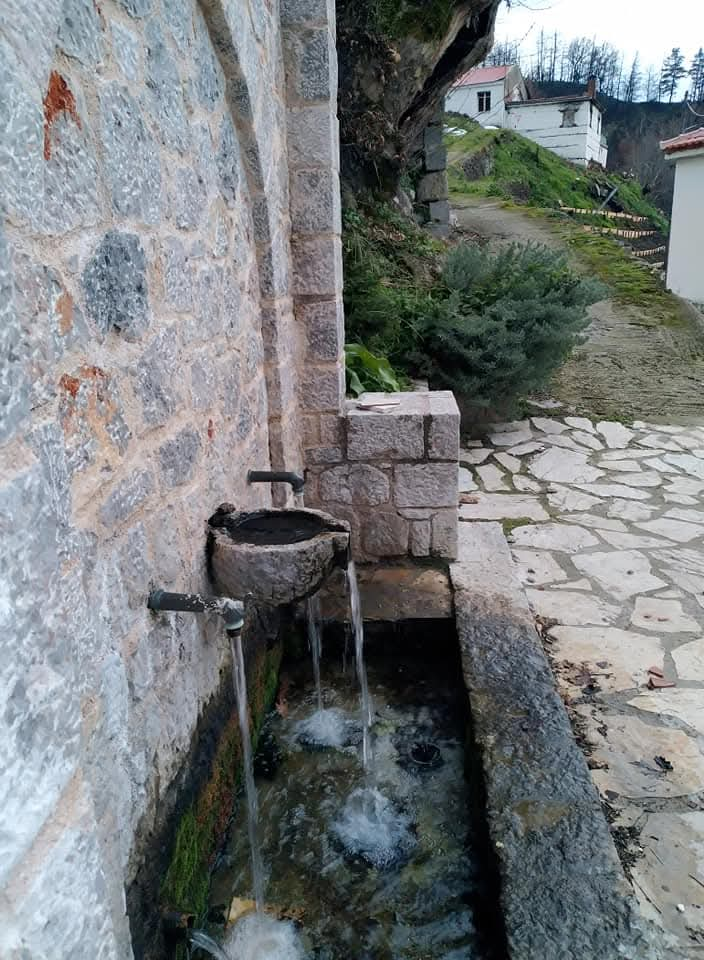
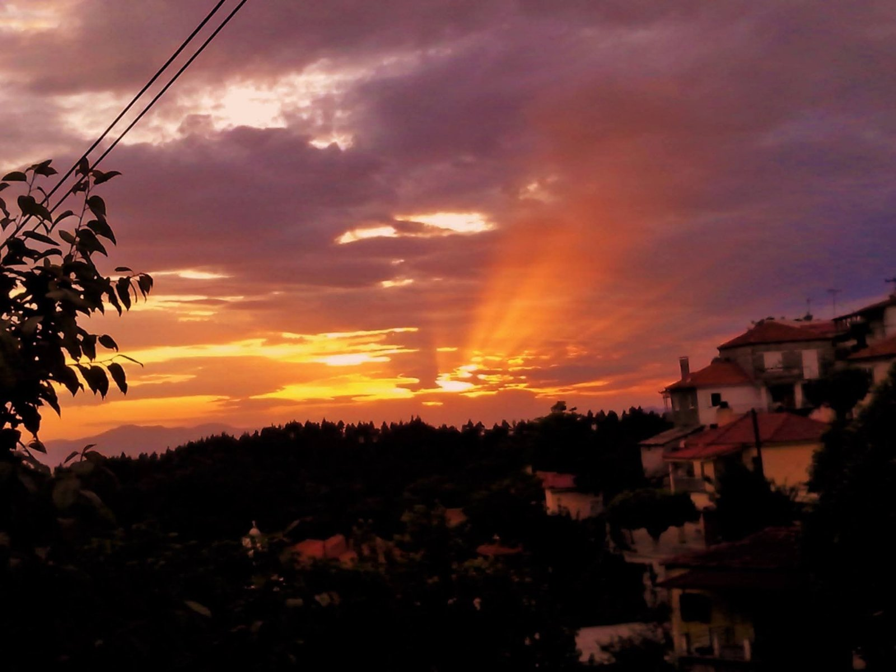
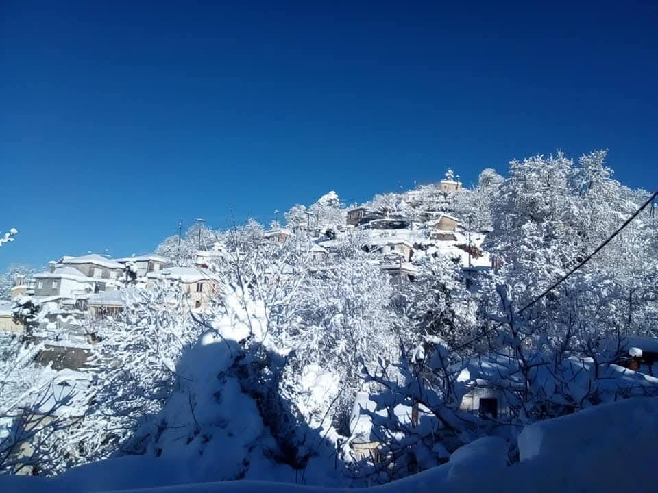
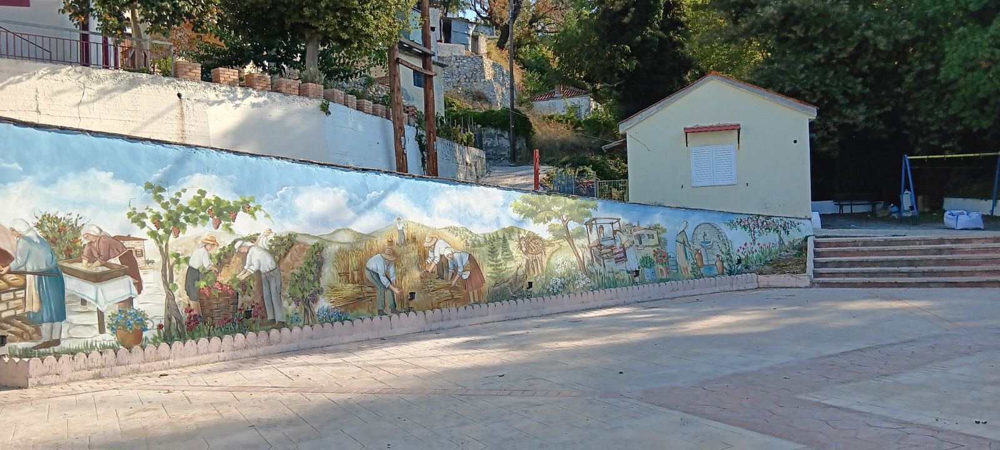
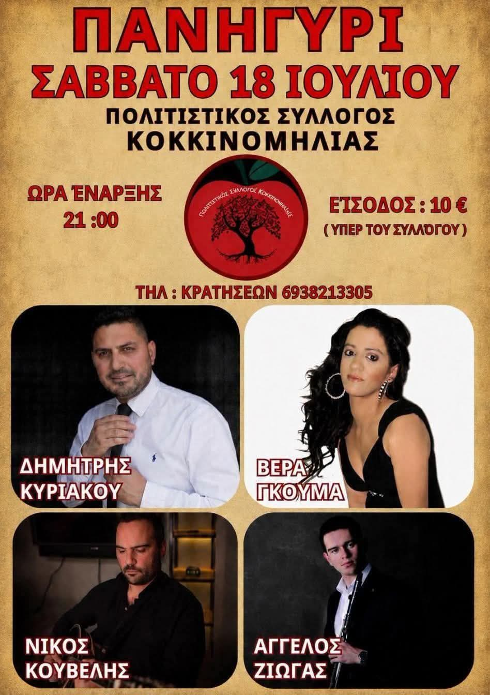
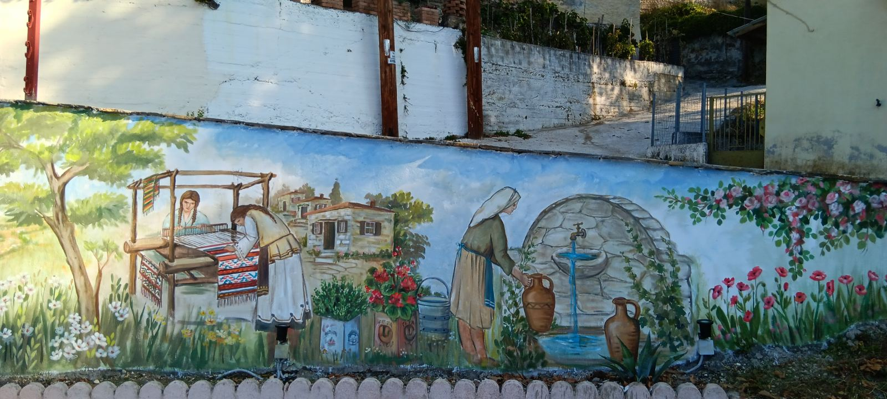

Γιατί η Κοκκινομηλιά είναι ένα Εξαιρετικό Χωριό;
Υπάρχουν συγκεκριμένοι λόγοι που καθιστούν αυτό το χωριό έναν μοναδικό τόπο για να ζει κανείς ή να τον επισκεφθεί:
- Μικροκλίμα και Καθαρός Αέρας: Λόγω του υψομέτρου, το καλοκαίρι, όταν στις παραθαλάσσιες περιοχές επικρατεί καύσωνας, στην Κοκκινομηλιά απολαμβάνει κανείς μια μοναδική δροσιά (το βράδυ η ζακέτα είναι απαραίτητη). Ο αέρας είναι πεντακάθαρος και γεμάτος οξυγόνο.
- Η Καλλιτεχνική Πλατεία: Η καρδιά του χωριού, η κεντρική του πλατεία, προσφέρει μια μοναδική αίσθηση ηρεμίας. Εκεί δεν θα βρείτε τα κλασικά πλατάνια, αλλά ένα σπουδαίο σύγχρονο αξιοθέατο: μια εντυπωσιακή, μεγάλης έκτασης ζωγραφική (τοιχογραφία) που φιλοτεχνήθηκε από γνωστή ζωγράφο, μεταμορφώνοντας τον χώρο σε ένα ανοιχτό πνευματικό και καλλιτεχνικό κέντρο.
- Αγνά Προϊόντα & Γαστρονομία: Η Κοκκινομηλιά είναι το ιδανικό σημείο για να προμηθευτεί κανείς απευθείας από τους ντόπιους παραγωγούς εξαιρετικό ντόπιο τυρί, αγνό μέλι και παραδοσιακό τσίπουρο. Όσο για το φαγητό, τόσο στο ίδιο το χωριό (όπου μπορεί κανείς να φάει πολύ καλά) όσο και στους γύρω οικισμούς, υπάρχουν εξαιρετικές οικογενειακές ταβέρνες με νόστιμα, σπιτικά εδέσματα και εκλεκτά ντόπια κρέατα.
- Στρατηγικό Ορμητήριο-Αστραπή: Λειτουργεί ως ο απόλυτος «συνδετικός κρίκος» ανάμεσα στο βουνό και τη θάλασσα. Οι αποστάσεις προς τα μεγάλα παραθαλάσσια κέντρα και τις ακτές είναι εξαιρετικά σύντομες, καθιστώντας τις καθημερινές εξορμήσεις εύκολες και ξεκούραστες.
Η Ιστορική Διαδρομή: Από την Προϊστορία μέχρι Σήμερα
Προϊστορία και Αρχαιότητα
Η ευρύτερη περιοχή της Βόρειας Εύβοιας (η αρχαία Ιστιαιώτιδα και Ελλοπία) κατοικείται αδιάλειπτα από την Παλαιολιθική και Νεολιθική εποχή. Η γεωγραφική θέση της Κοκκινομηλιάς, κρυμμένη μέσα σε βουνά, την καθιστούσε ιδανικό καταφύγιο αλλά και παρατηρητήριο από την αρχαιότητα. Κατά τους κλασικούς και ελληνιστικούς χρόνους, η περιοχή βρισκόταν υπό την επιρροή της ισχυρής Ιστιαίας. Οι κάτοικοι των ορεινών αυτών όγκων ασχολούνταν κυρίως με την κτηνοτροφία, την υλοτομία και την παραγωγή πίσσας, η οποία ήταν απαραίτητη για τη στεγανοποίηση των πλοίων των αρχαίων Ελλήνων.
Βυζάντιο και Τουρκοκρατία
Κατά τη βυζαντινή περίοδο και αργότερα, με την έλευση των Φράγκων και των Οθωμανών, ο οικισμός άρχισε να διαμορφώνεται πιο συγκροτημένα. Το όνομα Κοκκινομηλιά κρύβει πίσω του γοητευτικούς θρύλους:
- Η επικρατέστερη λαϊκή παράδοση αναφέρει ότι στην περιοχή υπήρχε μια τεράστια, άγρια μηλιά που έβγαζε κατακόκκινα μήλα, η οποία αποτελούσε σημείο αναφοράς για τους ταξιδιώτες.
- Μια άλλη, πιο αιματηρή εκδοχή, συνδέει το όνομα με τις σφορρές μάχες κατά την Τουρκοκρατία, όπου το χώμα «έβαψε κόκκινο» κοντά σε μια μηλιά.
Στα χρόνια της Οθωμανικής κυριαρχίας, η Κοκκινομηλιά εξελίχθηκε σε ένα ισχυρό «κεφαλοχώρι» των βουνών. Λόγω του δύσβατου εδάφους, οι Τούρκοι δεν είχαν μόνιμη παρουσία μέσα στο χωριό, επιτρέποντας στους κατοίκους να διατηρούν μια σχετική αυτονομία. Το χωριό έγινε κρησφύγετο κλεφτών και αρματολών, ενώ οι Κοκκινομηλιώτες συμμετείχαν ενεργά στην Επανάσταση του 1821 υπό την ηγεσία τοπικών οπλαρχηγών.
20ος Αιώνας: Κατοχή, Εμφύλιος και η Εποχή του Ρετσινιού
Ο 20ος αιώνας έφερε μεγάλες προκλήσεις. Κατά τη διάρκεια της Γερμανικής Κατοχής, τα πυκνά δάση της Κοκκινομηλιάς αποτέλεσαν ορμητήριο των ανταρτών του ΕΛΑΣ. Οι κάτοικοι πλήρωσαν βαρύ φόρο αίματος για τη βοήθεια και τη φιλοξενία που προσέφεραν στην Αντίσταση.
Μεταπολεμικά, το χωριό γνώρισε μια περίοδο σημαντικής οικονομικής ακμής βασισμένη σε ένα μοναδικό προϊόν: το ρετσίνι. Η Κοκκινομηλιά αναδείχθηκε σε ένα από τα μεγαλύτερα «ρετσινοχώρια» της Ελλάδας. Οι άνδρες του χωριού, οι ξακουστοί ρετσινοχώρες, δούλευαν σκληρά στα δάση, τροφοδοτώντας την ελληνική βιομηχανία και κρατώντας την τοπική οικονομία ζωντανή.
Η Μεγάλη Δοκιμασία του 2021 και τα Ση points Αναγεννήσεως
Τον Αύγουστο του 2021, η Βόρεια Εύβοια έζησε μία από τις μεγαλύτερες περιβαντολλογικές καταστροφές στη σύγχρονη ιστορία της Ελλάδας. Η Κοκκινομηλιά βρέθηκε στο επίκεντρο της πύρινης λαίλαπας. Η φωτιά προκάλεσε σοβαρές ζημιές στις υποδομές, κατέστρεψε σπίτια και ισοπέδωσε το δάσος γύρω από το χωριό.
Ωστόσο, τρία μεγάλα γεγονότα επιστημονικής, κοινωνικής και οικονομικής φύσεως σηματοδοτούν σήμερα την απόλυτη αναγέννηση του οικισμού:
- Η Ανοικοδόμηση του Ιερού Ναού του Ταξιάρχη: Κατά τη διάρκεια της φωτιάς, η μεγάλη και κεντρική εκκλησία του χωριού, ο Ταξιάρχης, κάηκε ολοσχερώς, προκαλώντας βαθιά θλίψη. Σήμερα, όμως, αποτελεί ένα σπουδαίο σύμβολο ελπίδας: μετά από την ευγενή και γενναιόδωρη προσφορά ενός μεγάλου και παγκοσμίως γνωστού Έλληνα εφοπλιστή, ο ναός ξαναχτίζεται και επισκευάζεται από την αρχή με δικά του έξοδα.
- Το Νέο Περιβαλλοντικό Κέντρο Βόρειας Εύβοιας (Παλιό Σχολείο): Το παλιό, ιστορικό σχολείο του χωριού επισκευάστηκε ριζικά και ανακατασκευάστηκε πλήρως με τη χορηγία της Elpedison, μεταμορφούμενο σε ένα κτίριο υπερσύγχρονο και λειτουργικό. Με τα εγκαίνια να είναι προγραμματισμένα για τον Σεπτέμβριο του 2026, το κτίριο αυτό θα λειτουργήσει ως το επίσημο Περιβαλλοντικό Κέντρο Βόρειας Εύβοιας, αποτελώντας το κέντρο ερευνών, ενημέρωσης και φιλοξενίας για πανεπιστήμια από όλο τον κόσμο.
- Το «Θαύμα» της Φύσης: Το τοπικό οικοσύστημα αναγεννάται με ρυθμούς που εκπλήσσουν ακόμη και τους πιο έμπειρους παρατηρητές.
Ένα Ζωντανό Υπαίθριο Εργαστήριο: Η Μάχη της Χλωρίδας
Το δάσος της Κοκκινομηλιάς αποτελούσε μια μεταβατική ζώνη (οικότονο), όπου η μεσογειακή βλάστηση συναντούσε το ορεινό τοπίο. Αυτό το σπάνιο μωσαϊκό χλωρίδας αναγεννάται σήμερα με διαφορετικούς, συναρπαστικούς μηχανισμούς, μετατρέποντας την περιοχή σε ιδανικό πεδίο μελέτης για φοιτητές, δασολόγους και περιβαλλοντολόγους:
- Η Χαλέπιος Πεύκη: Διαθέτει πυροανθεκτικούς κώνους (κουκουνάρια) που άνοιξαν με τη θερμότητα της φωτιάς, γεμίζοντας τις πλαγιές με εκατομμύρια νέα μικρά πευκάκια.
- Η Μαύρη Πεύκη (Pinus nigra) και τα Έλατα: Αυτοί οι ορεινοί γίγαντες κάλυπταν τις πιο ψηλές ζώνες. Καθώς δεν αναγεννώνται εύκολα μετά από φωτιά, το γεγονός ότι ήδη αρχίζουν και ξεπροβάλλουν ξανά οι πρώτοι μικροί μαύροι πεύκοι και διάσπαρτα έλατα δείχνει ότι το μικροκλίμα και το έδαφος παραμένουν εξαιρετικά ισχυρά.
- Η Ορμητική Εμφάνιση της Δρυός (Βελανιδιάς): Το πιο εντυπωσιακό φαινόμενο είναι η βελανιδιά, η οποία φυτρώνει πλέον παντού, σχεδόν «ανεξέλεγκτα». Η δρυς χρησιμοποιεί το «μυστικό της όπλο»: την πρεμνοβλάστηση. Το βαθύ ριζικό της σύστημα έμεινε ζωντανό κάτω από το χώμα και πέταξε εύρωστα βλαστάρια με απίστευτη ταχύτητα.
Γιατί αυτό καθηλώνει την Επιστημονική Κοινότητα;
Οι επιστήμονες μελετούν σε πραγματικό χρόνο τη «Μάχη της Σκίασης»: η δρυς μεγαλώνει γρήγορα, δημιουργεί φυσική σκιά, συγκρατεί την υγρασία και προστατεύει τα πιο ευαίσθητα σπορόφυτα της μαύρης πεύκης και του ελάτου από τον ήλιο. Παράλληλα, η εξάπλωση της βελανιδιάς δημιουργεί ένα πιο μικτό και φυσικά θωρακισμένο δάσος, καθώς τα πλατύφυλλα στερούνται ρετσινιού και είναι πολύ πιο ανθεκτικά σε μελλοντικές πυρκαγιές.
Τα Ιστορικά Εξωκλήσια της Κοκκινομηλιάς: Φύση, Ιστορία και Ελπίδα στο Όρος Ξηρόν
Στο ορεινότερο χωριό της Βόρειας Εύβοιας, την Κοκκινομηλιά (χτισμένη σε υψόμετρο 600 μέτρων στο όρος Ξηρόν), τα εξωκλήσια δεν είναι απλώς θρησκευτικοί χώροι. Είναι ζωντανά σημεία αναφοράς, μάρτυρες της ιστορίας του τόπου και σύμβολα της αναγέννησης της τοπικής κοινότητας.
Ανακαλύψτε τα τρία πιο σημαντικά εξωκλήσια της περιοχής, τις ιστορίες τους και τις διαδρομές που αξίζει να περπατήσετε.
1. Προφήτης Ηλίας: Το Σύμβολο Αναγέννησης και Ελπίδας
Χτισμένο σε ένα από τα πιο προνομιακά και γραφικά σημεία του χωριού, το ναΰδριο του Προφήτη Ηλία προσφέρει καθηλωτική πανοραμική θέα στο καταπράσινο —και σταδιακά αναγεννώμενο— τοπίο της Βόρειας Εύβοιας.
Η Σημασία της Ανακαίνισης
Για την Κοκκινομηλιά, που επλήγη σκληρά από τις καταστροφικές πυρκαγιές του 2021, η πρόσφατη ανακαίνιση του Προφήτη Ηλία δεν ήταν μια απλή δομική συντήρηση. Αποτέλεσε έναν ισχυρό συμβολισμό ενότητας και επανεκκίνησης. Η αποκατάσταση έγινε πράξη με τη φροντίδα της Εκκλησίας, των τοπικών αρχών, αλλά κυρίως με την εθελοντική προσφορά και την αγάπη των κατοίκων και του Εκπολιτιστικού Συλλόγου.
Ο Εορτασμός στο Ξωκλήσι:
- Παραμονή (19 Ιουλίου): Μέγας Πανηγυρικός Εσπερινός με αρτοκλασία και παραδοσιακά κεράσματα στο ξωκλήσι.
- Ανήμερα (20 Ιουλίου): Πανηγυρική Θεία Λειτουργία.
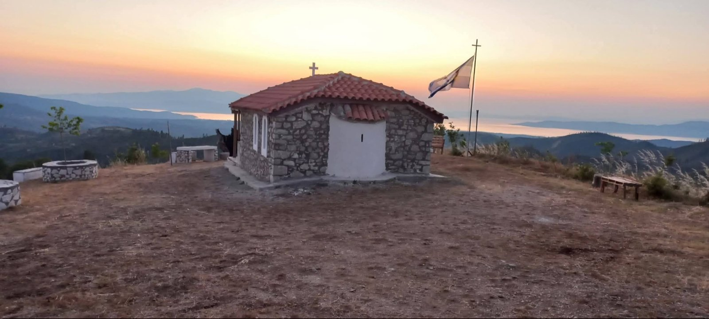
Το Μεγάλο Πανηγύρι στην Πλατεία (20 Ιουλίου)
Το πανηγύρι του Προφήτη Ηλία είναι η μεγαλύτερη γιορτή του χρόνου για την Κοκκινομηλιά. Μετά τις λειτουργίες στο ξωκλήσι, η γιορτή μεταφέρεται στην κεντρική πλατεία του χωριού για το καθιερωμένο «Αντάμωμα».
Πρόκειται για ένα αυθεντικό, παραδοσιακό δημοτικό πανηγύρι με ζωντανή μουσική, χορό μέχρι το πρωί και νόστιμες ντόπιες γεύσεις, που συγκεντρώνει πλήθος κόσμου από όλη την Εύβοια.
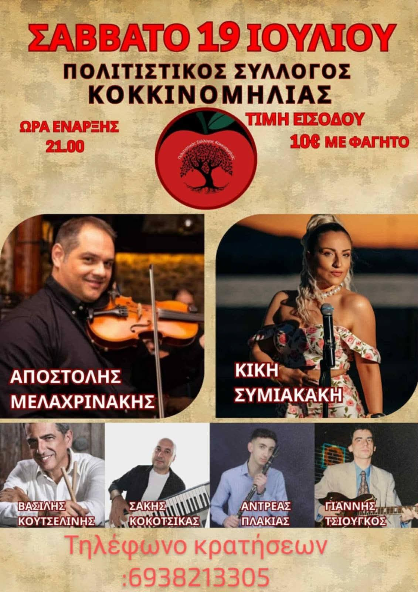
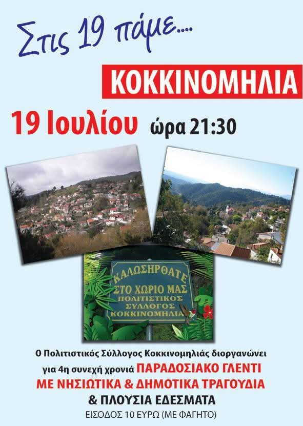
2. Ιερός Ναός Αναλήψεως: Στο Ψηλότερο Μπαλκόνι του Όρους Ξηρού
Σε ένα από τα πιο ορεινά και επιβλητικά σημεία γύρω από το χωριό, το εξωκλήσι της Αναλήψεως στέκεται περιτριγυρισμένο από τις δασωμένες πλαγιές του όρους Ξηρού.
Σταθμός για Πεζοπόρους & Φυσιολάτρες
Η διαδρομή προς την Ανάληψη αποτελεί μία από τις ωραιότερες πεζοπορικές διαδρομές της περιοχής.
- Ημερομηνία Εορτασμού: Κινητή εορτή (39 ημέρες μετά το Πάσχα, πάντα Πέμπτη).
- Το Έθιμο: Μετά τη Θεία Λειτουργία και την αρτοκλασία, οι πιστοί συγκεντρώνονται στο προαύλιο ή στην πλατεία για το καθιερωμένο τοπικό κέρασμα.
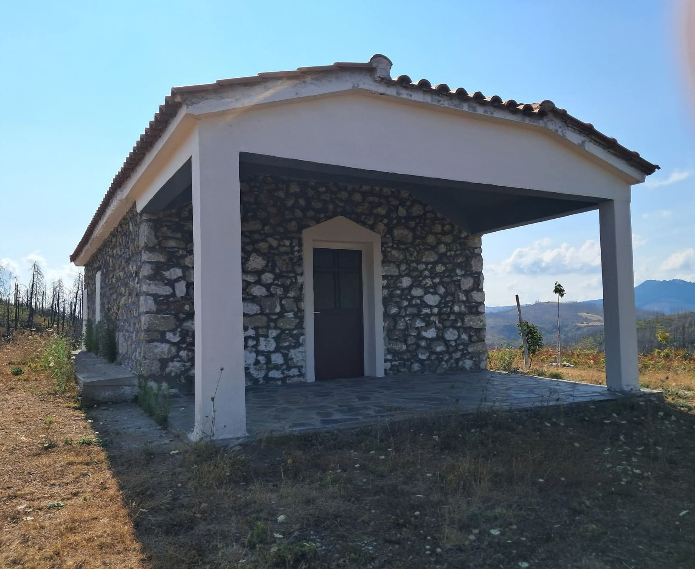
3. Αγία Παρασκευή: Ο Ζωντανός Μάρτυρας του «Παλιοχωρίου»
Το εξωκλήσι της Αγίας Παρασκευής φέρει στις πέτρες του τη βαθιά ιστορική μνήμη και τις ρίζες της Κοκκινομηλιάς.
Η Ιστορία του Αρχικού Οικισμού
Σύμφωνα με την topική παράδοση, οι πρόγονοι των σημερινών κατοίκων ζούσαν διασκορπισμένοι σε μικρούς οικισμούς. Ο παλαιότερος από αυτούς βρισκόταν στη θέση «Παλιοχώρι», ακριβώς δίπλα στο σημείο όπου βρίσκεται σήμερα το εκκλησάκι.
Κατά την Τουρκοκρατία, ο τοπικός Αγάς υποχρέωσε τους κατοίκους από το Παλιοχώρι και τη Μακροφτυλιά να μετοικήσουν στη σημερινή θέση της Κοκκινομηλιάς για να ελέγχει πιο εύκολα τη φορολογία. Έτσι, η Αγία Παρασκευή παραμένει το ιστορικό ορόσημο της αρχικής εστίας του χωριού.
- Εορτασμός: 26 Ιουλίου (Αγίας Οσιομάρτυρος Παρασκευής).
- Τοπίο: Φωλιασμένο μέσα στην ορεινή φύση, προσφέρει απόλυτη ηρεμία και είναι προσβάσιμο μέσω μιας πανέμορφης σύντομης πεζοπορικής διαδρομής.
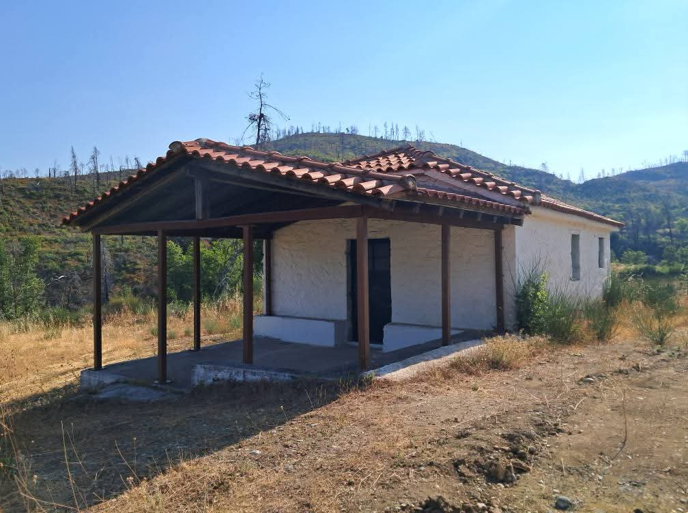
Χρήσιμες Πληροφορίες για τον Επισκέπτη
| Εξωκλήσι | Υψόμετρο / Τοποθεσία | Ημερομηνία Γιορτής | Highlights |
|---|---|---|---|
| Προφήτης Ηλίας | Οικισμός Κοκκινομηλιάς | 20 Ιουλίου | Πανοραμική θέα, Μεγάλο Πανηγύρι |
| Ανάληψη | Ψηλότερες πλαγιές όρους Ξηρού | Κινητή (39 μέρες μετά το Πάσχα) | Πεζοπορία, Ανοιξιάτικο τοπίο |
| Agpar | Θέση «Παλιοχώρι» | 26 Ιουλίου | Ιστορικές ρίζες χωριού, Ήσυχο φυσικό περιβάλλον |
Αξιοθέατα στην Ευρύτερη Περιοχή
Η Κοκκινομηλιά αποτελεί την ιδανική αφετηρία για να ανακαλύψετε τα σπουδαιότερα αξιοθέατα της Βόρειας Εύβοιας, από τα ορεινά μοναστήρια μέχρι τα "ελληνικά Σεϋχέλλες".
Το Απολιθωμένο Δάσος και το Μουσείο της Κερασιάς
- Το Απολιθωμένο Δάσος: Πριν από περίπου 10–20 εκατομμύρια χρόνια, η έντονη ηφαιστειακή δραστηριότητα κάλυψε το πλούσιο υποτροπικό δάσος της περιοχής με στάχτη, με αποτέλεσμα την τέλεια απολίθωση των κορμών.
- Μουσείο Απολιθωμένων Θηλαστικών Κερασιάς: Στεγάζει τα ευρήματα των τοπικών ανασκαφών. Εκεί ο επισκέπτης θα δει τους εντυπωσυακούς, προϊστορικούς προγόνους των ελεφάντων: Δεινοθήρια, μαχαιρόδοντες, χαλικοθήρια, προϊστορικούς ρινόκερους και χιπαριόν.
Οι Καταρράκτες του Δρυμώνα και η Μονή Οσίου Δαυίδ
Οι καταρράκτες βρίσκονται σε υψόμετρο 620 μέτρων. Το νερό του ποταμού Σηπιά πέφτει από ύψος 15 μέτρων, δημιουργώντας μια κρυστάλλινη λίμνη περιβαλλόμενη από ένα δίκτυο διαμορφωμένων μονοπατιών με ξύλινα γεφυράκια. Πολύ κοντά βρίσκεται και η ιστορική Μονή του Οσίου Δαυίδ, ιδανική στάση για πνευματική ηρεμία.
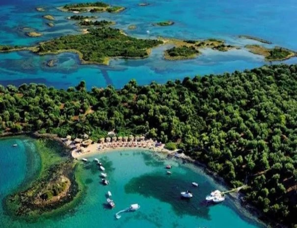
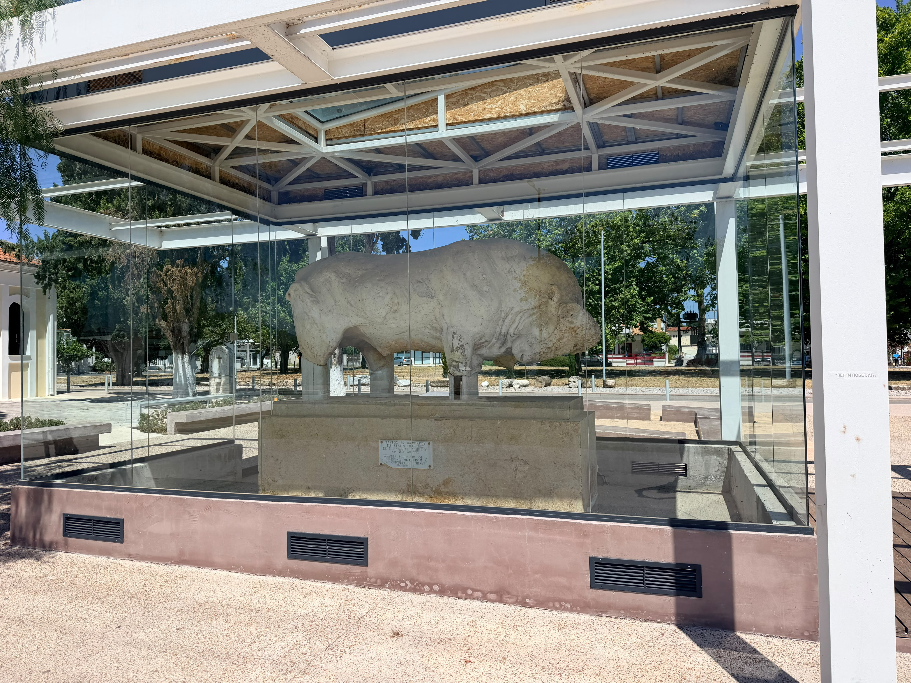
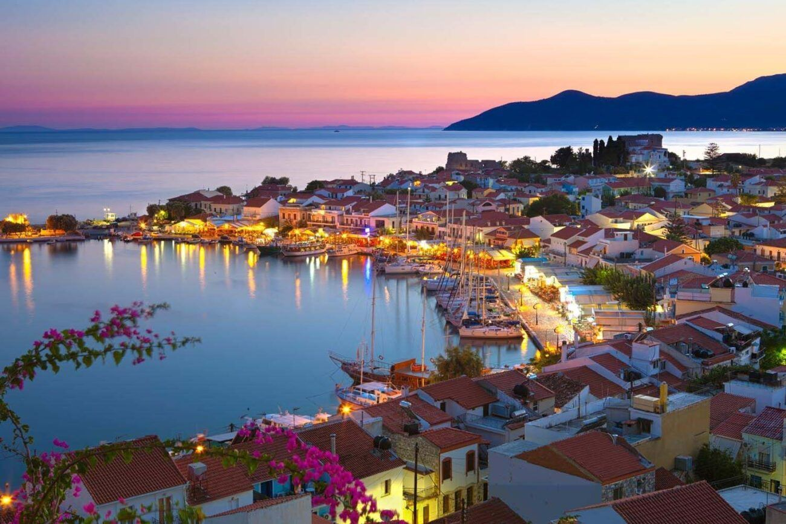

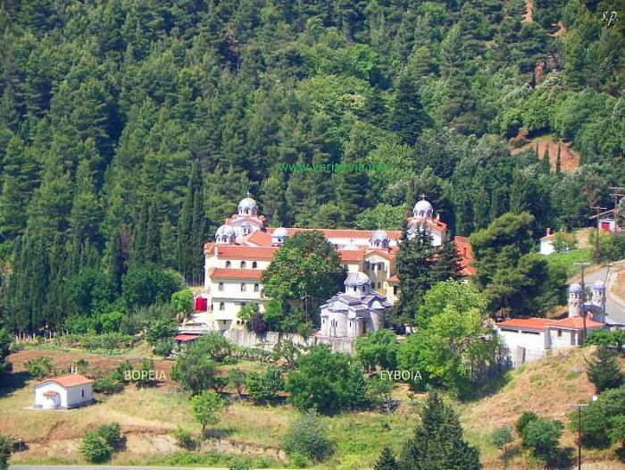
Ο Απόλυτος Οδηγός Παραλιών: Από τον Ευβοϊκό στο Αιγαίο
Η διαδρομή που ξεκινά από την Κοκκινομηλιά προσφέρει στον επισκέπτη το μοναδικό προνόμιο να επιλέξει ανάμεσα στην απόλυτη απανεμιά των κόλπων και την άγρια ομορφιά του ανοιχτού πελάγους.
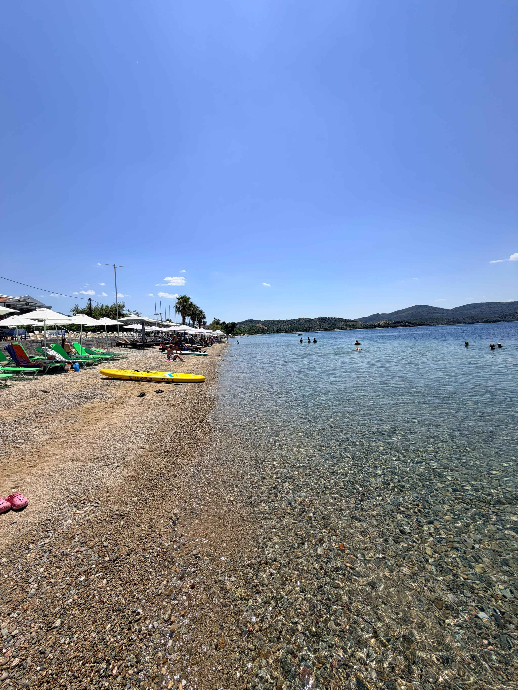
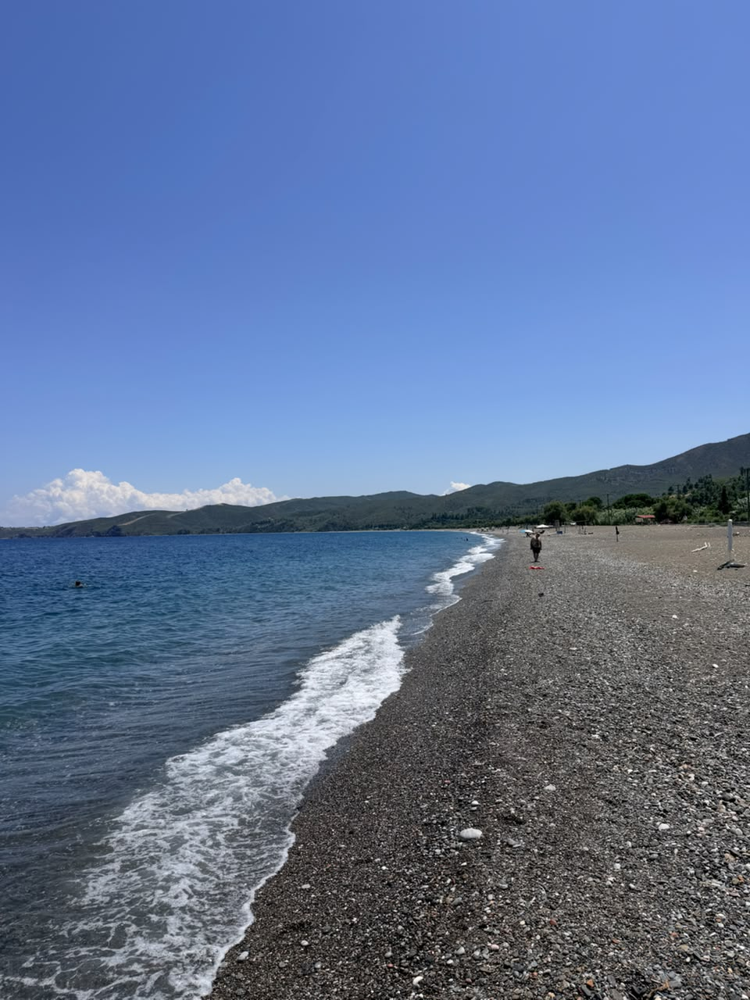

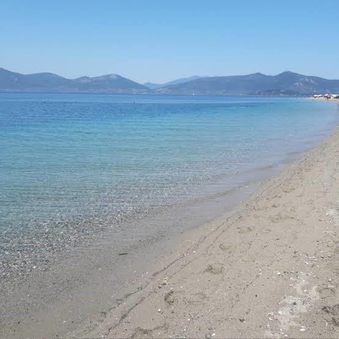
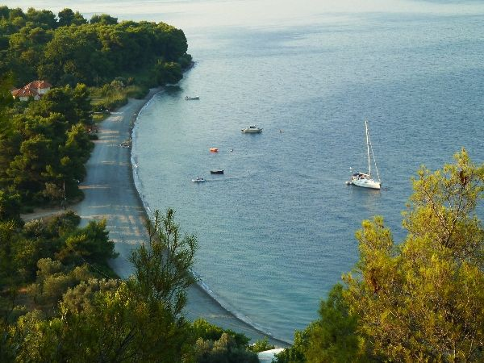
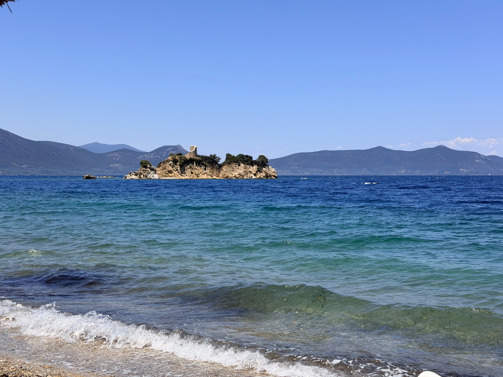
Συνταγές του Χωριού μας
Στην Κοκκινομηλιά ξέρουμε καλά από δύο πράγματα: από πανέμορφα δασικά τοπία και από καλό, αυθεντικό φαγητό! Οι συνταγές του χωριού μας δεν θέλουν μεζούρες και γραμμάρια ακριβείας· θέλουν μεράκι, αγνά υλικά και αυτή την κλασική «γιαγιαδίστικη» σοφία.
Μουσταλευριά: Το Παραδοσιακό "Energy Bowl" της Κοκκινομηλιάς
Τι θα χρειαστείτε: 4 ποτήρια μούστο, 1 ποτήρι αλεύρι, Κανέλα, Χοντροκομμένα καρύδια.
Εκτέλεση: Διαλύουμε το αλεύρι στον μούστο. Βράζουμε ανακατεύοντας συνεχώς μέχρι να πήξει. Σερβίρουμε με μπόλικο καρύδι και κανέλα!
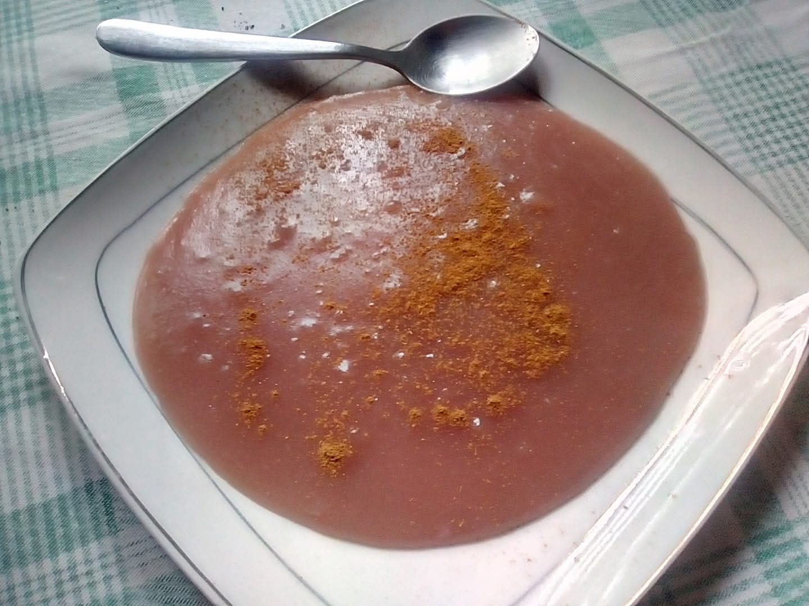
Αυγοτύρι: Ο Βασιλιάς του Μεζέ στο Καφενείο
Έσκασαν μουσαφιραίοι ξαφνικά και δεν ξέρετε τι να τρατάρετε; Γρήγορο, πεντανόστιμο και ο απόλυτος συνοδός για τις συζητήσεις στην πλατεία.
Τι θα χρειαστείτε: 1/2 κιλό τυρί φρέσκο τσαντίλας, 5 αυγά χωριάτικα, Λίγο αλάτι και πιπέρι.
Εκτέλεση: Τηγανίζουμε ελαφρώς το αλευρωμένο τυρί. Χτυπάμε τα αυγά και τα περιχύνουμε στο τηγάνι. Τηγανίζουμε σαν ομελέτα. Σερβίρουμε με ντόπιο κρασάκι!
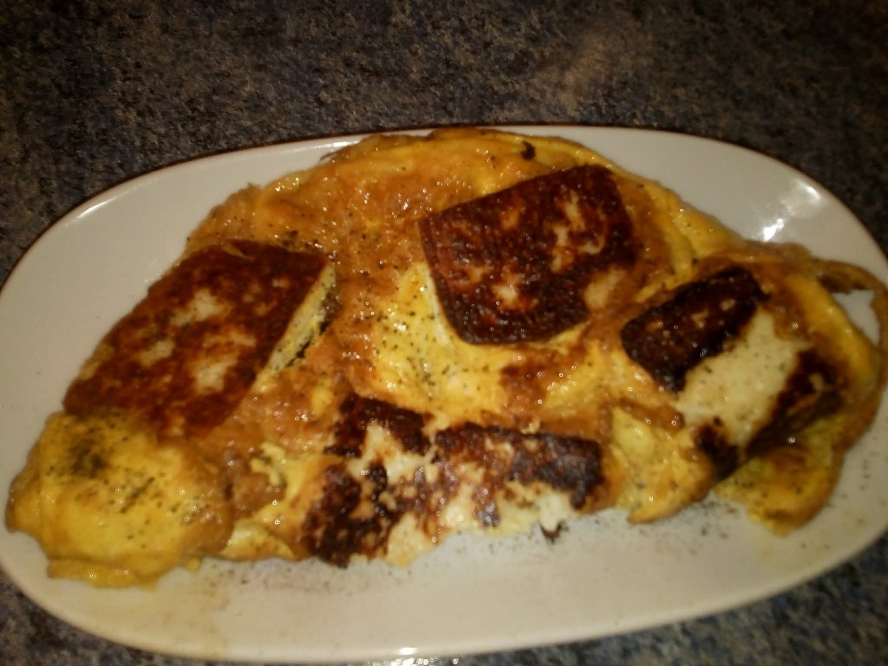
Ρεβύθια με Μανέστρα: Η Κυριακάτικη Θαλπωρή
Ένα πιάτο γεμάτο θαλπωρή, ιδανικό για τις κρύες μέρες στην Κοκκινομηλιά.
Τι θα χρειαστείτε: 500 gr ρεβύθια, 3 κρεμμύδια, 1 φλιτζάνι λάδι, 1 κ.σ. πελτέ, 150 gr κριθαράκι (μανέστρα), αλάτι & πιπέρι.
Εκτέλεση: Μουλιάζουμε τα ρεβύθια αποβραδίς. Τα βράζουμε με το κρεμμύδι μέχρι να μαλακώσουν. Προσθέτουμε λάδι, πελτέ και μπαχαρικά. Στο τέλος ρίχνουμε το κριθαράκι και το αλάτι και φρεσκοτριμμένο πιπέρι. Αφήνουμε το κριθαράκι να «πιει» τα ζουμιά του.
Επικοινωνία
Πρόεδρος Κοινότητας
Δημήτρης Δήμου
📞 6945165268
Πρόεδρος Πολιτιστικού Συλλόγου
Άγγελος Γερογιώργης
📞 6938213305